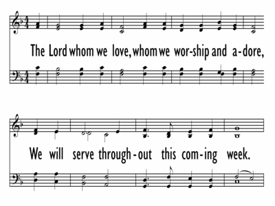

|
|
【親愛的救主】 |
|
The Lord whom we love, |
|
|
 |
|
|
|
|
|
|
【親愛的救主】 |
|
The Lord whom we love, |
|
|
 |
|
|
|
|
| Text: | The Lord Whom We Love |
| Author: | Kurt Kaiser |
| Tune: | BROOKS |
| Composer: | Kurt Kaiser |

| Title: | BROOKS (Kaiser) |
| Composer: | Kurt Kaiser |
| Meter: | Irregular |
| Incipit: | 32231 33224 21 |
| Key: | F Major |
| Copyright: | © 1986 WORD MUSIC (a div. of WORD, INC.) |
From Word Music to Baylor University, Christian composer leaves a legacy of
hundreds of songs.
KATE SHELLNUTT|
NOVEMBER 14, 2018 09:51 AM

The 83-year-old musician wrote more than 300 copyrighted tunes, released more
than a dozen albums of his own, and accompanied the late George Beverley Shea on
piano during Billy Graham’s crusades.
Kaiser passed away in Waco, Texas, the city where he’d lived for 59 years and
helped launch Word Music and Dayspring Baptist Church.
“For more than five decades, Kurt Kaiser enriched the world with a Christian
message of hope as a pioneer of modern church music,” said Baylor University
president Linda A. Livingstone in a tribute this week.
At Word Music, Kaiser had an ear for signing hit artists, moving up from
director of artists to vice president. During his career, he went on to work
with dozens of popular singers, ranging from Mahalia Jackson to Wayne Newton.
Kaiser and fellow Word pioneer Ralph Carmichael—known as the father of
contemporary Christian music—brought a pop sensibility to worship music for the
sake of evangelism.
Together, they “convinced evangelicals and fundamentalists that Christian pop
music could draw youth to outreach events and revivals,” including through their
1969 musical “Tell It Like It Is,” which sold half a million copies worldwide,
wrote researcher Wen Reagan, now a music and worship professor at Samford
University.
Reagan quoted Kaiser as saying, “Kids have been inundated with the same kinds of
[rock music], and nowadays it's everywhere. I just think it's a very sensible
way to reach kids. I can't imagine any evangelist who's interested in reaching
kids going with any of the twentieth-century hymn writers.”
Kaiser’s approach worked into the 1970s and beyond. Following his death this
week, many Christian leaders remembered the musical’s hit song “Pass It On” from
youth group.
“He was a remarkable combination of musical excellence that could not be
challenged, and heart and an ear for what the youth of American churches wanted
to say,” Terry York, professor of Christian ministry and church music at Baylor
University’s Truett Seminary and a fellow member of Dayspring Baptist, told the
Waco Tribune-Herald.
“Kids would hear a song, have tears in their eyes and then whistle it for the
rest of their lives.”
Kaiser, a native of Chicago who took to the piano as a child, was in awe of how
popular his music had become. During a Laity Lodge interview, he shared how
struck he was to hear “Pass It On” being sung at the Cotton Bowl one year.
https://talkabout.awana.org/?utm_source=Christianity+Today+&utm_medium=Digital+Display&utm_campaign=Talk+About+
“The feeling that comes to me, being able to write something that’s so
universally accepted, is, Isn’t that amazing what will happen when you allow God
to use your gifts?” the late pianist remarked.
Kaiser was also involved with Baylor—where his four children attended—as the
former director of the Baylor Religious Hour Choir as well as the Waco Symphony
Orchestra.
A graduate of the American Conservatory of Music in Chicago and Northwestern
University, Kaiser was honored with a lifetime achievement award from the
American Society of Composers, Authors and Publishers in 1992 and was inducted
into the Gospel Music Hall of Fame nearly a decade later.